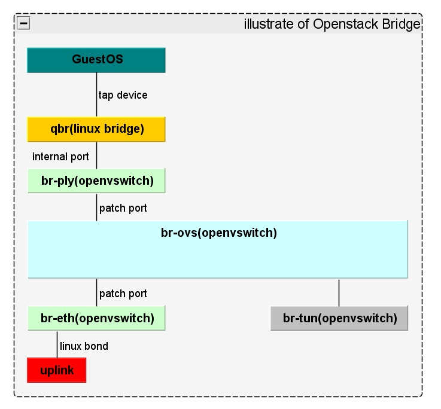
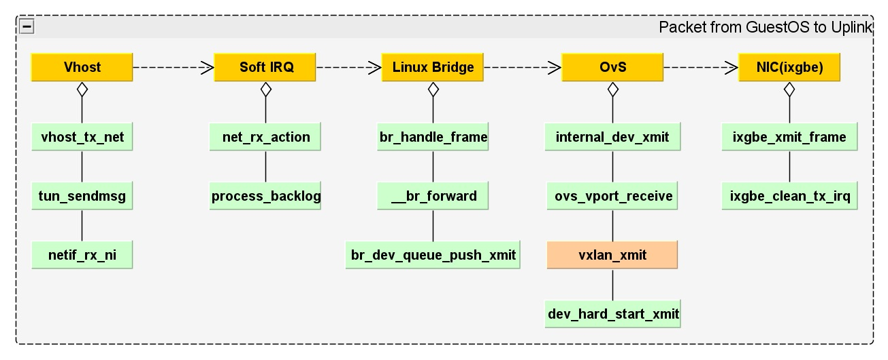
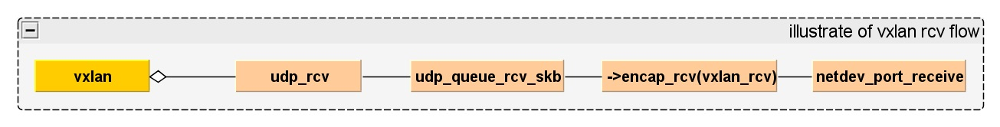
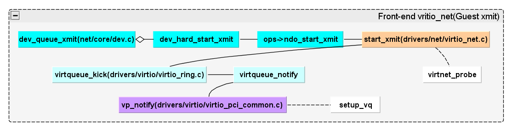

Openstack Bridge
Openstack Bridge Oview
- Bridge Overview

Packet Travel Path I
- Packet From Uplink to GuestOS

Packet Travel Path II
- Packet From GuestOS to Uplink

Packet Travel Path III
- Vxlan Packet Receive Flow
 - Create VxLAN Port
1
2
3$ ovs-vsctl add-br br0
$ ovs-vsctl add-port br0 vxlan1 -- set interface vxlan1 type=vxlan \
options:remote_ip=192.168.1.2 options:key=flow options:dst_port=8472
Packet Travel Path IV
- Virtio net Front-end xmit

Reference
- OpenStack Networking
- OpenStack Networking Guide
- Deployment scenarios: Scenario: Provider networks with Open vSwitch, Open vSwitch: High availability using DVR